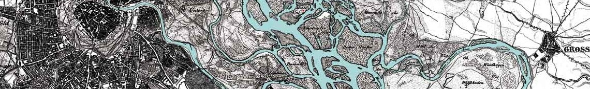

WebGIS - Gruppe 10
Home
Projekte
Feedbackformular mit Standortbestimmung
Standortsuche mit Rücksetzung
Bevölkerungsdaten in USA (Census Map)
Übungsaufgabe
Wohnstandortanalyse
INTRANET
FEEDBACK
IMPRESSUM

FIND
Reset View